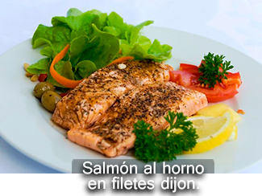
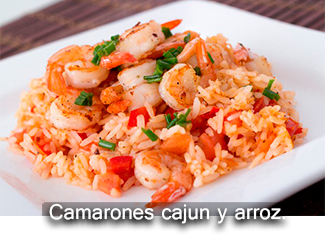
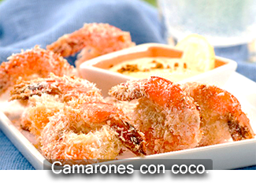

<section id="mariscos" data-transition="fade">

     <!-- Encabezado -->
        <header>    
                <nav>
                        <button data-view-aside="menu" data-icon="menu"></button>
                </nav>
                <nav class="on-right">
                        <button data-view-section="menus" data-icon="arrow-left"></button>    
                </nav>
                       
        </header>

         <!-- Cuerpo -->
        

    	<article id="mariscos-article" class="active indented">

				<ul class="horizontal scroll" style="heigt">
                    
                    <!--Fondo-->
					
                    <!--Fondo-->
					
					<!--Fondo-->
					


				</ul>

		</article>	
</section>